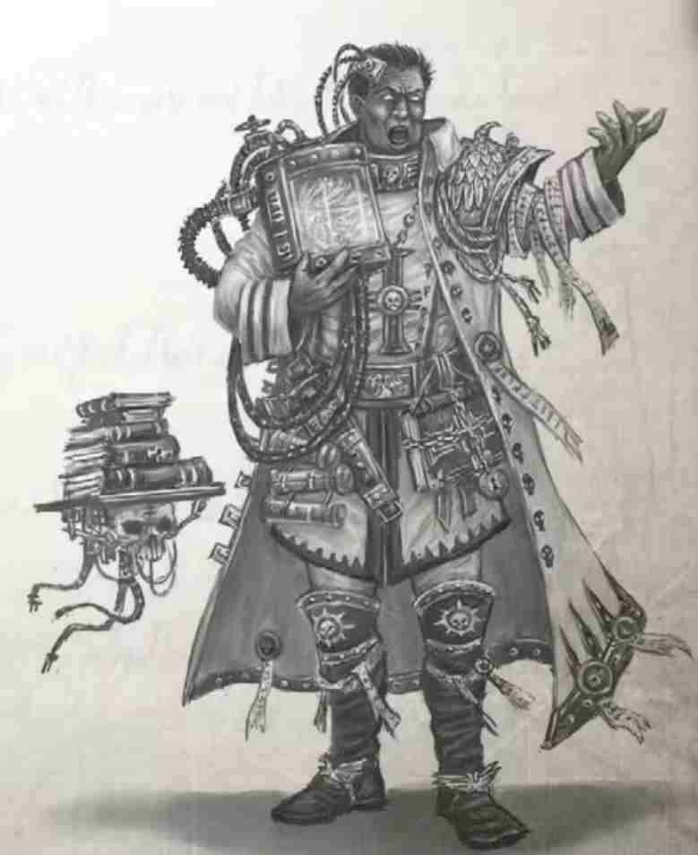
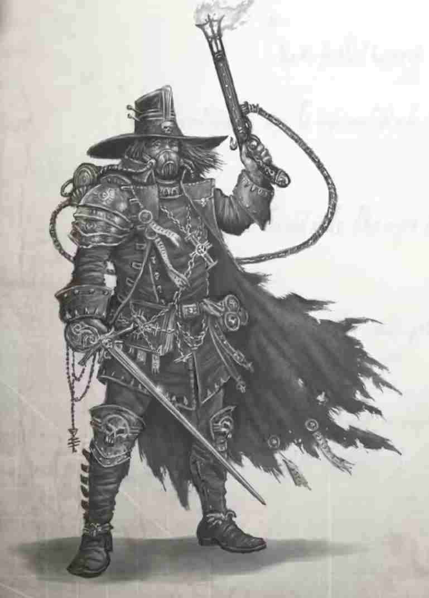
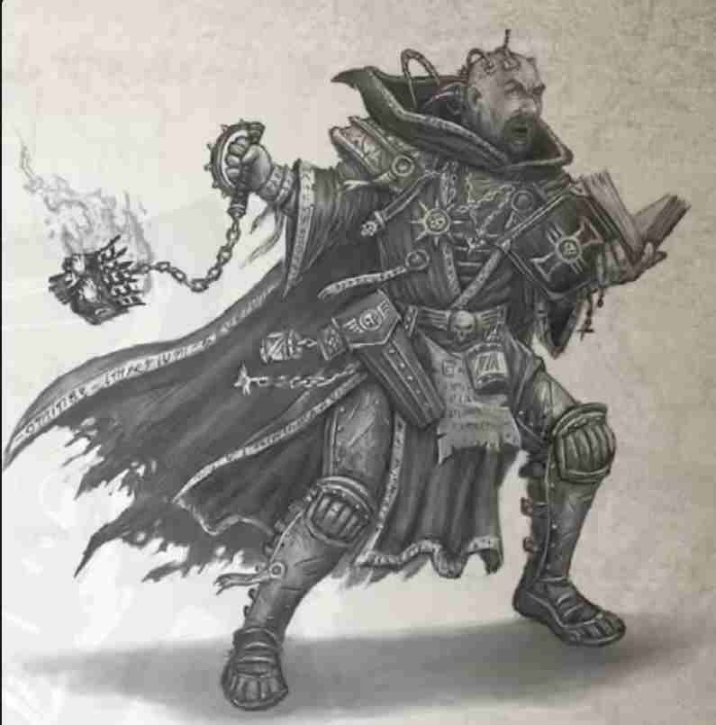

审判官索德万（Soldevan）
异端审判庭
索德万是一位相貌英俊的男人，他肤色如乌木般黝黑，他偏爱的威严军装令他的气场更加刚毅有力。索德万原为猎巫人瑞克胡斯麾下的审讯官，但他从未认同过导师的极端手段。因此，在获得审判官玫瑰结后，索德万迅速与瑞克胡斯决裂。索德万认为，守护人类免受威胁的关键在于知识，而非肆意破坏。
索德万的信念比他愿意承认的还要偏执。他相信，亚空间蕴含着无穷的力量源泉，而审判官可以凭借智慧和意志驾驭它。索德万希望开辟一条通往亚空间的道路，寻找栖息在那里的意识体，通过交涉从它们那获取对抗人类之敌的力量。索德万距离实现目标只有一步之遥。他手头已经有了几本禁书，只需进行适当的献祭和仪式，这些禁书就能召唤出强大的恶魔供他谈判。索德万孜孜不倦地寻求亚空间的知识或造物，有的是在智谋团行动中缴获的，有的则是他从不择手段的禁物贩子手中高价购买的。在这个过程中，索德万失去了理智，取而代之的是“亚空间藏有人类存续奥秘”的绝对偏执。他确信，暴君星正是通往亚空间秘密的关键通道。

审判官沃努斯·凯德（Vownus Kaede）
异端审判庭（前异形审判庭）
沃努斯·凯德是位乐观主义者，他既是审判官，也是知名的学者、哲学家。他还是剑术精湛的剑客、玩世不恭的狂徒与自命不凡的浪人。他的名字取自卡图迪努斯（Catuldynus）的寓言史诗《一度纯洁的巢都》中的游侠英雄。凯德前半生都在践行这位同名英雄留下的传说。他出身于“太阳系以东，马库拉格以西”的某地，年少时便义无反顾地追随自由船长（free captain）闯荡星海，心中不带一丝眷恋。他晋升审判官的细节至今仍扑朔迷离，每次讲述的版本都不尽相同。唯一不变的是他曾隶属异形审判庭，而后才找到自己作为猎巫人的天职。虽然过往履历曲折复杂，凯德审判官仍是智谋团中备受敬重的成员，他为智谋团效力也已逾十年。
凯德名义上隶属纯净派，但实际上，他一位技艺娴熟的灵能者，狂热地相信灵能觉醒就是人类的未来。为了让这一未来成为现实，凯德愿毫不犹豫地犯下任何暴行。他与他麾下尚武的侍仆小队常耗费大量时间，穿梭于卡利西斯各次星区，追查流言，寻找那些隐匿行踪的巫师。凯德极其厌恶瑞克胡斯的行事风格，时常暗中从猎巫人的迫害行动中解救那些有潜力的灵能者，并以此为乐。凯德审判官的形象完美符合帝国子民想象中猎巫人。他总是带着宽檐帽与地狱枪，腰间别着名为“小玩笑”的古老力场短剑，这样的外貌及其象征意义一目了然，而这正是凯德想要达到的效果。在他眼中，暴君星预言是一个待解的诱人谜团。

审判官阿尔·苏巴伊（Al-Subaai）
异形审判庭
阿尔·苏巴伊原为范·维根斯审判官的审讯官，最近才晋升为审判官。范·维根斯在帝国边缘搜寻异形文明，而阿尔·苏巴伊的职责就是在星域内的殖民世界中探查异形渗透的痕迹。阿尔·苏巴伊可能是暴君智谋团中最年轻的审判官，他的虔诚从外表就可见一斑：在出席集会时，他常在那身坚固实用的甲壳护甲上罩上一袭修士袍。
阿尔·苏巴伊深信，银河万物都相互关联，各类异形及其暴行都是银河所展现出的一部分敌意。在他看来，银河正像躯体对抗疾病一样，抗拒着人类占据星域的行动。异形（以及亚空间所有造物）都是银河敌视人类的具现化。因此，他主张彻底铲除所有异形，特别是那些对人类有影响的异形。他认为，自己的职责不仅涵盖搜捕受异形影响的邪教与腐化，也包括追查那些交易异形生物及异形技术的非法行径。阿尔·苏巴伊认为，任何人，只要与异形或异形造物打交道，都是人类之敌。而最让他快意的事情，莫过于将这些人绳之以法、施以智谋团裁定的刑罚。在阿尔·苏巴伊眼里，黑暗异端预言就是异形操纵的产物。